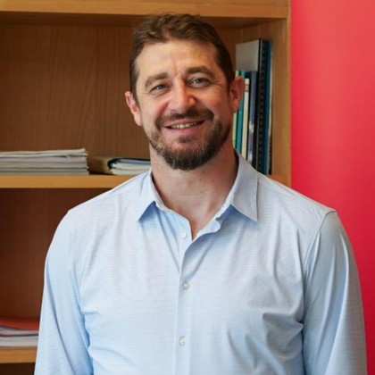
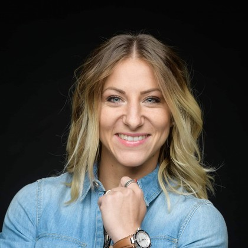

Historique du Karaté
Le karaté est un art martial japonais né à Okinawa au début du XXe siècle. En France, la discipline s'est développée après la Seconde Guerre mondiale ; la Fédération Française de Karaté (FFK) est créée en 1975.
L’équipe de France compte de nombreux titres européens et mondiaux.
Règles du Karaté
- Combat sur tatami de 8 m × 8 m.
- Points attribués selon précision, contrôle et efficacité.
- Catégories d’âge et de poids.
- Deux disciplines principales : Kata et Kumite.
Les Entraîneurs
Le staff de l’équipe de France est composé d’anciens champions reconnus, aujourd’hui responsables de la préparation technique et mentale des athlètes.

Entraîneur principal
Responsable de l’équipe de France: Yann BAILLON

Adjointe
Spécialiste kumite et préparation mentale: Alexandra RECCHIA
Les Catégories
| Catégorie | Âge | Discipline |
|---|---|---|
| Minimes | 12–13 ans | Kata / Kumite |
| Cadets | 14–15 ans | Kata / Kumite |
| Juniors | 16–17 ans | Kata / Kumite |
| Seniors | 18 ans et + | Kata / Kumite |
Lieu d’Entraînement
Les séances de l’équipe en Lorraine ont lieu au Karate Club de Metz.
Adresse : 11 Rue du Dauphiné, 57070 Metz (Lorraine).
Jours d’Entraînement
- Lundi : 10h00–12h00 / 15h00–17h00
- Mercredi : 9h00–12h00
- Vendredi : 14h00–17h00
Calendrier des Compétitions 2025
| Date | Événement | Lieu |
|---|---|---|
| 10 mars | Championnat d’Europe | Madrid |
| 25 avril | Open de Paris | Paris |
| 12 juillet | Stage National FFK | Marseille |
| 8 novembre | Championnat du Monde | Tokyo |